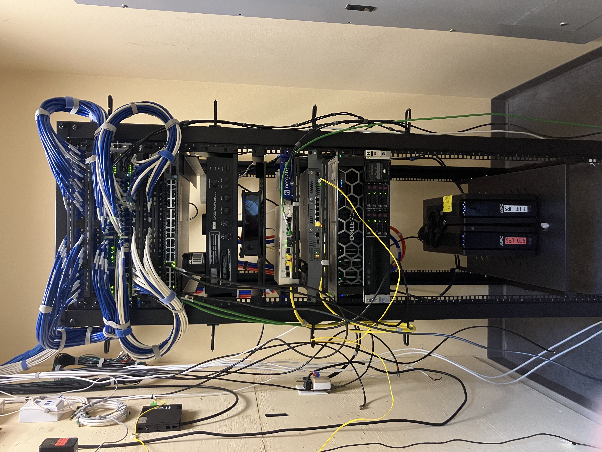

Skip to content
IT Refresh Project – March 2025

Server rack installation and network configuration at Toppino Eye Care.
- Worked as part of a two-man team to assemble and configure a new server rack, Juniper switches, and firewall.
- Relocated access points and completed cable management and labeling for the rack.
- Configured VLANs, assisted with server migration, and supported overall network infrastructure setup.
- Performed cable termination, toning, and connectivity testing to validate deployment.
Skills Learned
- Server Rack Assembly & Cable Management
- Network Cabling & Testing
← Back to Résumé